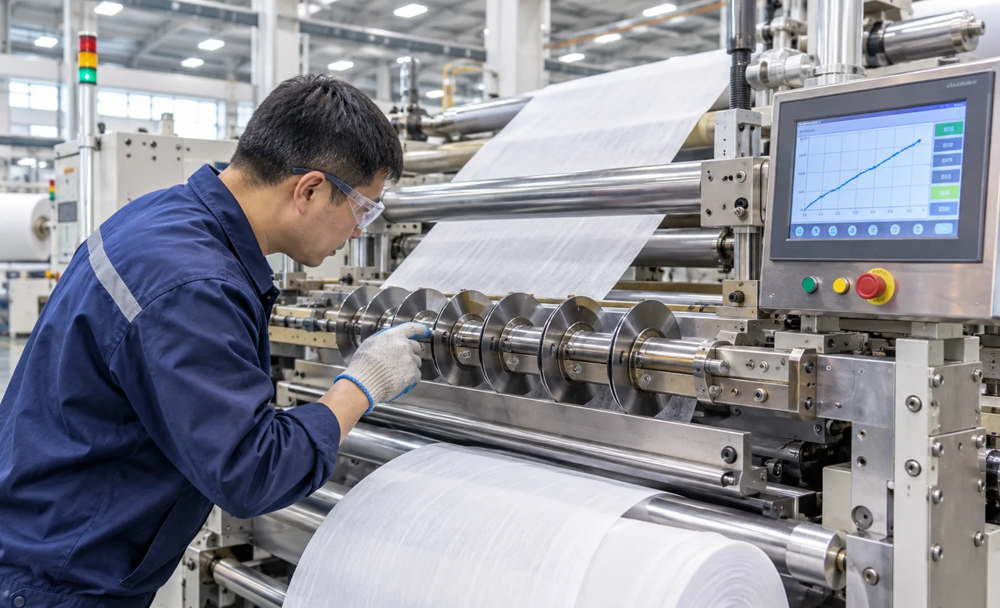
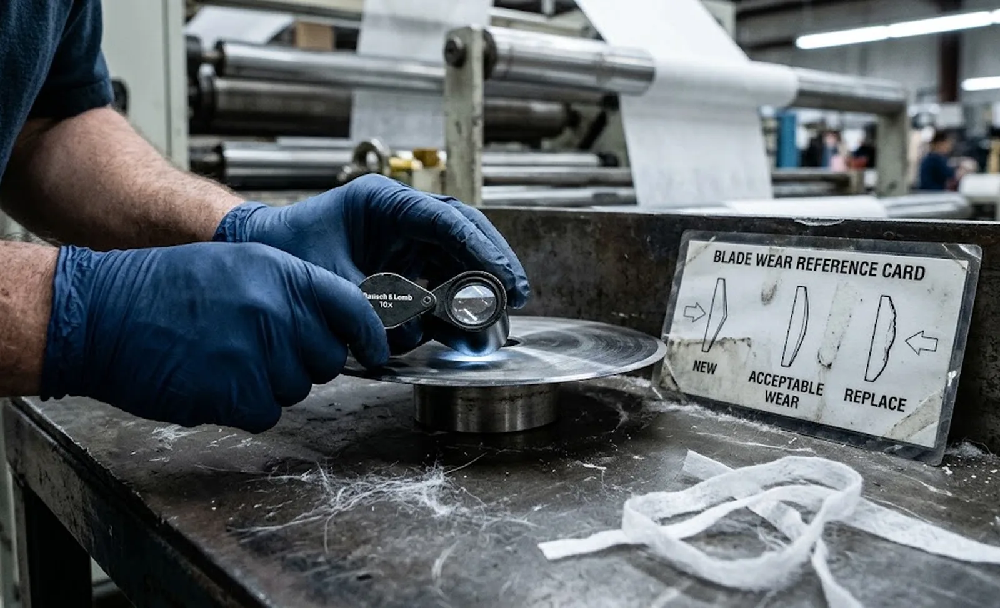

Published November 3, 2026 | By HDPTH Technical Editorial Team

Every slitting knife spends its working life moving away from the state in which it passed acceptance — the question is when the wear becomes visible. Most buyers specify sharp blades at FAT and never ask how the machine will tell them the knives are tired.
Why blade wear is a yield problem, not a maintenance footnote
Late detection of a dull blade is expensive in three compounding ways. First, quality drifts gradually: a full shift of product can sit near the specification limit before anyone rejects it. Second, on hygiene and medical nonwovens, slit dust and fibre pull-out contaminate product that still looks acceptable on the roll. Third, the failure itself is unplanned: a web break forces an emergency blade change, and downtime multiplies. The economics are in our knife life and consumables cost guide; monitoring converts those costs from random to scheduled.
How dull blades announce themselves on the rewind
Wear is easiest to read at the rewind and at the filters, not at the knife holder itself. Each material family has its own signature.
| Early symptom | Typical cause | Monitoring hook |
|---|---|---|
| Fuzz and fibre pull-out at the slit (nonwovens) | Razor edge rounding | Edge check, camera inspection, filter differential pressure |
| Whitening or partially welded slit edge (films) | Friction heat from a dull edge | Edge-quality sampling, load trending |
| Burr on one side (paper, laminates) | Shear knife wear or clearance drift | Burr sampling under magnification |
| Rising slitting drive load at constant speed | Friction from worn edges | Motor current trend with wear alarm |
One warning: on machines with spring-loaded or pneumatically compensated knife holders, holder pressure can mask wear for hours — the knife presses harder, edge quality holds, until the reserve is exhausted and everything drifts at once. Load trending catches this phase as rising force.
Wear detection options: from run-time counters to camera inspection
The baseline is disciplined manual sampling: an operator pulls an edge sample each shift, checks it under magnification against a reference photo, and logs it. It costs almost nothing, but it depends on the operator. The first step up is counters in the HMI: run-time and metres-sliced recorded per knife position, prompting when a position passes its threshold. Per-position data beats one global timer.
The second layer is indirect physical sensing. Trending the slitting station drive current — or a cutting-force signal where fitted — reveals wear as a slow climb at constant speed and tension, with a threshold alarm to trigger the change prompt. On dusty nonwovens, the differential pressure across the dust extraction system acts as a surrogate sensor, since rounded edges load the filters faster. The most capable option is camera-based edge inspection that scores fuzz, burr and dust and correlates the result with knife positions. These belong in the same data architecture as wider machine health monitoring — see our condition monitoring guide and inspection system options.

From data to a blade management routine
Instruments only pay off when they feed a routine. Define a wear limit per product family — a measurable criterion such as maximum burr height or an acceptable fuzz score: end of life is a quality decision, not a metallurgical constant. Record the metres or hours at which fresh blades cross it; that figure becomes the change trigger. Behind it sit the physical loops: scheduled regrind with per-blade records, and standardised sizes so the loop is affordable. Where changeovers are frequent, this pairs naturally with automatic blade changing.
Specifying wear monitoring in the purchase
None of this is expensive if ordered with the machine — and awkward to retrofit if not. Require: per-knife-position counters visible in the HMI and exportable with the production data; slitting load trending with an adjustable alarm; edge-quality acceptance criteria written into the FAT protocol so the wear baseline is documented on your material; and standard, regrindable blade sizes with stated regrind limits in the spares list. On connected lines, confirm these signals are exposed through the same OPC UA or data-logging interfaces as in our data logging and ERP integration guide.
Blade wear monitoring does not replace good knives — it protects what you spend on them. For the wider machine-health picture, read our condition monitoring buyer guide; for the yearly economics behind these routines, see the knife life and consumables cost guide. HDPTH builds its slitting stations around automatic knife systems with programmable positioning, so monitored, repeatable blade changes are part of the standard build, not a retrofit.
Need a slitting set-up that tells you when knives are tired?
HDPTH specifies blade sets, wear limits and monitoring interfaces from documented cutting trials, and supports customer material tests before order. Send your material and target widths for a monitoring-ready slitting configuration with your quotation.
Request a Cutting Trial QuoteQuestions to put to every vendor
- What blade life do you document on our material, and what criterion defines end of life?
- Are run-time and metres-sliced counters implemented per knife position, and exportable from the HMI?
- Can the slitting station trend cutting load and raise an adjustable wear alarm?
- Do you offer camera-based edge inspection linked to knife positions? Which interfaces expose the signals?
- Are replacement blades standard sizes with defined regrind limits?
Frequently asked questions
What is blade wear monitoring on a slitter rewinder?
The combination of instruments and routines that track how far slitting knives are from their sharp, as-ground state: run-time and metres-sliced counters per knife position, trending of cutting-station motor load, periodic edge-quality sampling and, optionally, camera inspection of slit edges. The goal: changes scheduled on documented wear limits, not triggered by scrap events.
How can I tell a slitter blade is getting dull without instrumentation?
Watch the rewind, not the knife. On films, dull blades show as fuzz, whitening or partially sealed slit edges from friction heat. On nonwovens, fibre pull-out and rising dust at the slit are the classic signs. On paper and laminates, look for burrs on one side. Rising slitting motor load at constant speed is another clue.
Which sensors are used to monitor blade wear automatically?
The most common are indirect: run-time or metres-sliced counters per knife position in the HMI, and trending of the slitting station drive current or cutting force. Advanced lines add camera-based edge inspection correlated with knife positions, or use dust extraction differential pressure as an indirect signal on dusty nonwovens.
How often should slitter blades be changed?
By documented wear limit, not by calendar. Define an end-of-life criterion per product family — an edge-quality threshold such as maximum burr height — and record the metres sliced or hours run when a fresh blade crosses it. That figure becomes the change trigger. Blade material dominates the interval: carbon steel razors may last hours on abrasive webs, carbide shear knives days.
What should I ask a slitter rewinder vendor about blade wear monitoring?
Ask what blade life they document on your material and which wear criterion defines end of life. Ask whether per-knife counters are implemented and exportable, whether cutting load is trended with an adjustable alarm, and whether the signals are exposed through OPC UA or data logging. Confirm that replacement blades are standard sizes with defined regrind limits.